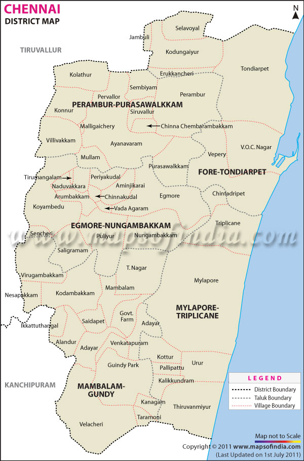
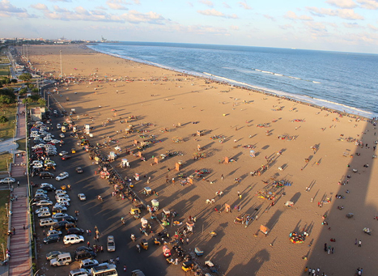

CHENNAI,TAMILNADU,INDIA
Map
Facts baout chennai



Ancient temples, vibrant arts, natural wonders and a bustling culinary scene make Chennai, the capital of Tamil Nadu, one of the most popular tourist destinations in the southern fringes of the country.
Places to have fun


 More fun!
Marina Beach
More fun!
Marina Beach
Marina beach in Chennai along the Bay of Bengal is India's longest and world's second longest beach. This predominantly sandy of nearly 12 kilometers extends from Beasant Nagar in the south to Fort St. George in the north.
Phoenix mall
Phoenix mall is the niggest shopping mall in chennai with luxury shops, brands and quality foodcourts
MGM DIZEE WORLD
largest water park, artificial snow kingdom and underwater aquarium